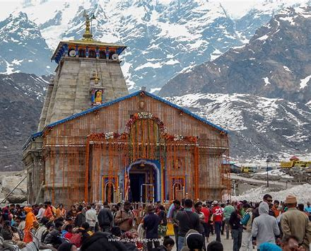

Kedarnath Temple, Uttrakhand
The famous Kedarnath Temple lies at the altitude of 3583 km in the Garhwal Range of Himalayas in the state of Uttrakhand. It is a part of the prominent Char Dham Yatra of Hinduism and opens only from April to mid November.